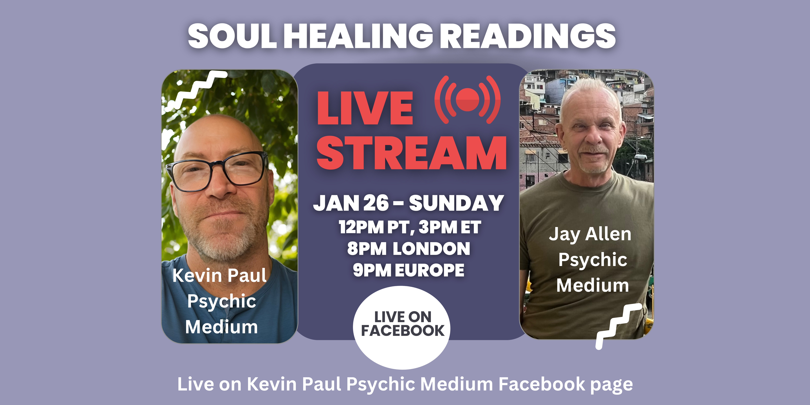

Our mission is to support your spiritual journey with psychic and mediumship workshops, readings, and courses that deepen your practice, enhance your abilities, and foster connection with a like-minded community.
Founder of the Academy of Real Majick, Kevin offers training in psychic and mediumship development, paranormal investigations, and metaphysical healing tools.
An international psychic, medium, and End-of-Life Doula, Jay trained at Arthur Findlay College and integrates his intuitive abilities into both business and spiritual work.
Kevin Paul and Jay Allen are respected psychics and educators with unique expertise. Kevin, founder of the Academy of Real Majick, offers training in psychic and mediumship development, paranormal investigations, and metaphysical healing tools. His YouTube series Mystical Quickie covers spiritual topics like clairvoyance and séances. Jay, an international psychic, medium, and End-of-Life Doula, trained at Arthur Findlay College and the International End-of-Life Doula Association. Formerly a corporate executive at IBM, GE, and Charles Schwab, Jay integrates his intuitive abilities into both business and spiritual work. Together, they guide others on their spiritual journeys.

Discover your soul's path with a personalized Soul Healing Reading from Kevin and Jay, combining their psychic and mediumship abilities to provide clarity and guidance. This online event offers a unique opportunity to reconnect with your inner self and gain valuable insights into your spiritual journey. Confirm your reservation now!
RegisterDiscover your soul's path with a personalized Soul Healing Reading from Kevin and Jay, combining their psychic and mediumship abilities to provide clarity and guidance. This online event offers a unique opportunity to reconnect with your inner self and gain valuable insights into your spiritual journey. Confirm your reservation now!
Register